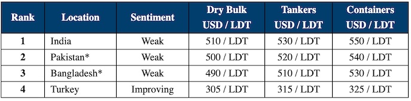

inWeekly Demolition Reports23/12/2023

As we enter the last week of 2023, sub continent markets struggle on, going the final furlong to round out what has been an overall disappointing year in terms of pricing and volumes.
Prices have once again collapsed from over USD 600/LDT to below USD 500/LDT over certain stages this year, seeing around USD 150/LDT wiped from residual values in a shock for owners and cash buyers alike.
Now that currencies and steel prices seem to have stabilized across the board for the time being, many will be hoping for a more bullish 2024, particularly as the supply of tonnage is set to increase – from both the dry bulk and container sectors.
Ready and available financing and LCs will of course remain the chief component in how far markets are able to push on in the new year, and there is some hope that incoming IMF loans and settled elections will bring with a greater desire of buyers to fill their plots and for banks to loan again.
International prices have actually gained good ground over the last quarter of the year – but markets in India have yet to keep pace – instead actually losing around 7-8 percent of value in the last month alone, with further losses biting also this week.
Regulatory aspects are certain to cause disruption in 2024 also – with the new UAE ship recycling directive coming into effect and the EU finally willing to consider adding Indian yards to their approved recycling list.
For week 51 of 2023, GMS demo rankings / pricing for the week are as below.

📄 Download PDF: 22%20December,%202023.pdfSource: GMS,Inc. ,https://www.gmsinc.net/gms_new/index.php/web